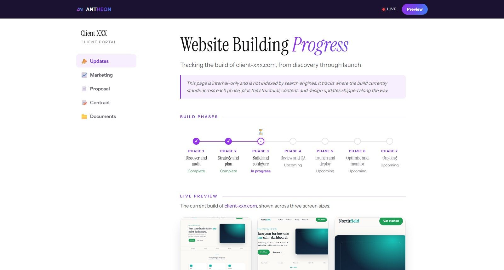

Stop chasing status updates. Automate the handoff.
If clients keep asking where things are, the problem is not communication. It is a handoff nobody owns.

On this page
Key takeaways
- Status questions are a symptom of handoffs that go quiet.
- Pick the moments a client cares about and trigger an update at each one.
- A live portal beats a weekly email because it is never out of date.
- Keep people for the exceptions, not the routine updates.
"Just checking in on this." Every business gets these emails, and every one of them costs twice: once for the client who had to ask, and again for the person who has to stop, find the answer, and reply.
Most teams treat this as a communication problem and promise to "send more updates." That lasts about two weeks. The real fix is structural.
Every "just checking in" email has a cause
Clients chase updates when they cannot see progress. That usually happens at a handoff: sales passes the job to delivery, delivery waits on the client for files, or the work moves between two specialists. Nobody is ignoring the client. The work just went quiet at a point nobody was watching.
Clients don't want more emails. They want to stop wondering.
Find the handoffs that go quiet
Look at your last ten projects and note every time a client asked for an update. Then match each one to where the work was at that moment. You will usually find the same two or three handoffs behind most of the chasing.
Those are the moments to fix first. Not everything, just the gaps that generate the most questions.
Trigger updates from the work itself
The most reliable update is one nobody has to remember to send. When a task is completed, a stage changes, or a file arrives, that event can notify the client automatically.
- Stage changes: "Your project has moved to review" goes out the moment it does.
- Waiting on the client: a polite, specific reminder lists exactly what is still needed.
- Milestones: a short note when something meaningful ships, with a link to see it.
Because these updates come from the work, they are always accurate. Nobody writes them, so nobody forgets them.
Give clients one place to look
Notifications tell clients something changed. A portal tells them where everything stands, any time they check. It turns a stream of emails into a single page that is always current, which is exactly what an anxious client wants at 9pm on a Sunday.
Keep people for the exceptions
Automation should handle the routine, so your team can handle the moments that need judgement: a delay, a scope question, a decision only a person can make. Those conversations land better when they are not buried among routine status emails.
A simple first version
You do not need a full portal on day one. Start by automating one update at your noisiest handoff, measure how many chasing emails drop, then add the next. Small, visible wins build the case for the rest.
Want help finding where your handoffs go quiet? Our Systems Audit maps every handoff in your delivery process and shows which updates to automate first.

We engineer the CRMs, automations, and AI workflows behind growing businesses. This journal is where we share what we learn building them.